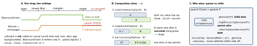

swiftui · folio
In one line: Gestures are value types composed with combinators (replacing recognizer-delegate
arbitration); @GestureState resets on end and cancel. Shape = one
vector view, Canvas = one immediate-mode view for thousands of primitives,
drawingGroup() = flatten a subtree into one offscreen image before display.
Download PDF Print view LaTeX source


Gestures
- Types (
…Gesture):Tap(count:),SpatialTap(16, has location),LongPress(minimumDuration:),Drag(minimumDistance:)(default 10 pt),Magnify/Rotate(17; wereMagnification/Rotation). - Callbacks:
.updating(→@GestureState, auto-reset),.onChanged(→@State, you reset),.onEnded(commit; success only). Animated snap-back:@GestureState(resetTransaction:). - Drag values:
translationis a delta fromstartLocation;locationis absolute in the chosen space (.local,.global,.named(...)). - Hit testing: transparent areas (
Spacer,Color.clear) don’t receive touches →.contentShape(Rectangle());.allowsHitTesting(false)lets touches pass through. - ScrollView vs drag: scroll pan and your drag compete — a plain
.gesture(DragGesture())blocks scrolling or is swallowed. Fixes: biggerminimumDistance;.simultaneousGesture; long-press.sequenced(before:)drag (the reorder pattern);.scrollDisabled(isDragging)(16);UIGestureRecognizerRepresentable(18) for delegate arbitration / direction checks.
Example — drag that snaps back on cancel
@GestureState private var drag: CGSize = .zero // transient
@State private var pos: CGSize = .zero // committed
RoundedRectangle(cornerRadius: 12)
.offset(x: pos.width + drag.width, y: pos.height + drag.height)
.gesture(DragGesture(minimumDistance: 20)
.updating($drag) { v, state, _ in state = v.translation }
.onEnded { v in // success only
pos.width += v.translation.width
pos.height += v.translation.height })Drawing
Shape:path(in rect: CGRect)returns aPath; rect from layout.Path:move(to:),addLine,addQuadCurve,addCurve,addArc,closeSubpath. WithoutanimatableData(AnimatablePairfor two) it snaps, not morphs.strokestraddles the path (half is clipped at the edge);strokeBorder(InsettableShape) stays inside.Canvas { ctx, size in }(15): immediate mode — no view per element, no diffing.GraphicsContextis a value: copy it to scope a transform/opacity;fill,stroke,draw,clip(to:),addFilter,blendMode,drawLayer.ctx.resolve(Text(...)); views passed assymbols:+.tag(id)→resolveSymbol(id:).TimelineView(schedule)(15) re-runs its content on.animation(minimumInterval:paused:),.periodic(from:by:),.everyMinute,.explicit; readcontext.date. The system throttles it when not visible — cap the rate for battery.drawingGroup(): composites the subtree into one offscreen bitmap. Wins for many overlapping / blended / shadowed views; costs an offscreen texture (memory), is rasterised (blurs if scaled), and Core Animation–composited views inside (controls, web/media, most UIKit) show a placeholder.
Canvas vs views vs drawingGroup
| Views | tens of elements; each tappable, accessible, transitions |
| drawingGroup | must stay views but compositing is the cost |
| Canvas | hundreds–thousands of visual-only primitives: charts, particles, waveforms |
TimelineView(.animation(minimumInterval: 1/30)) { tl in
Canvas { ctx, size in // ONE view, 5 000 dots
let t = tl.date.timeIntervalSinceReferenceDate
for p in points { ctx.fill(Path(ellipseIn: CGRect(
x: p.x, y: p.y + 4 * sin(t + p.x), width: 3, height: 3)),
with: .color(.green)) }
if let s = ctx.resolveSymbol(id: 0) { ctx.draw(s, at: .zero) }
} symbols: { Image(systemName: "star.fill").tag(0) }
}Traps
@StateinonChangedwithout handling cancel — the view stays mid-drag.- Tap + long-press on one view fight — state the relation with
.exclusively(before:). - Mixing
translation(delta) withlocation(absolute) or the wrong coordinate space. - Canvas is opaque: no per-element hit testing, no VoiceOver — add
.accessibilityLabel/.accessibilityChildren { }, do hit tests yourself from the gesture location. drawingGroup()everywhere — memory + blur for nothing; measure first.